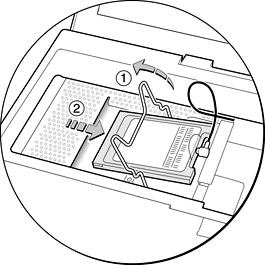
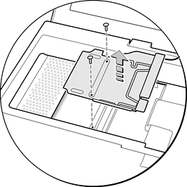

The RAM Expansion Slot
The iBook computer has one RAM expansion slot. To get access
to the RAM expansion slot, the user must open up the computer by
performing the following operations.
Important
The user should be reminded to observe the usual precautions
to avoid damage to the electronic components due to static electricity.
- Shut down
the computer.
- Unplug the AC adapter from the computer.
- Remove the battery from the computer.
- Unlock the keyboard by turning the slotted screw that is part
of the Num Lock LED, which is between the F5 and F6 function keys.
Turning the screw 180 locks or unlocks the keyboard. (The locking
screw may already be in the unlocked position.)
- Release the two latches located at the top of the keyboard.
One latch is between the ESC key and the F1 key; the other is between
the F11 and F12 keys. You can release the latches by sliding them
toward the front of the computer. See Figure 3-5.
- Pulling only on the latches (not on the keys), lift the keyboard
up and turn it over, without disconnecting the keyboard's membrane
cable.
- Remove the AirPort Card, if present, by unlatching the formed
wire holder on the module, then pulling the flex tab to remove the
module. The antenna cable should remain attached to the module.
See Figure 4-1
- Using a Phillips head screwdriver, remove the two screws that
secure the metal RAM shield plate. The screws are to the right of
the AirPort Card. See Figure 4-2.
- Slide the metal RAM shield plate toward the rear of the computer,
then lift it up and out of the computer.
Figure
4-1 Removing the AirPort Card

Figure
4-2 Removing the RAM shieldplate

Once the RAM expansion module has been installed in the slot,
you close up the computer by performing these steps in reverse order.
Be careful to replace the shield plate properly so that the AirPort
Card will fit.
Important
When replacing the keyboard, make sure the latches
at the top line up with the corresponding slots in the case.
If AC and battery power are removed for longer than ten minutes,
you may need to reset the computer's clock (using the Data and
Time control panel) when the computer is turned back on.
© 2001 Apple Computer, Inc. (Last Updated October 15, 2001)